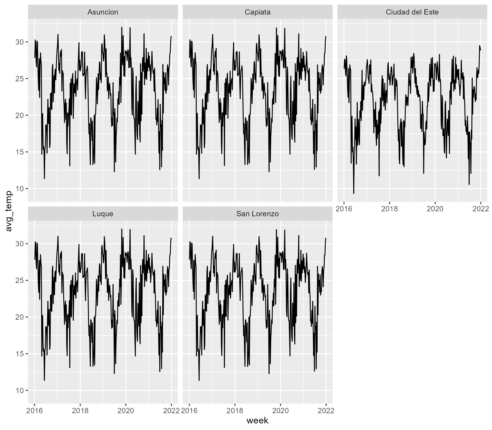

Here are some more examples of how you can use the pRycollection
package or any of its datasets. We stay with the
py_temperature dataset, which has 7 variables and 1565
weeks of temperature data for the cities of Asuncion, Capiata, Ciudad
del Este, Luque, San Lorenzo. We could make, for example, a facet plot
of the average weekly temperature for each city in the dataset.
plot
Now let’s make a somewhat more complex example: Let us say we want to
analyze a specific crime type and add the avg_temp column
and the holiday column from the py_temperature
dataset as additional variables.
library(pRycollection)
crime <- py_weekly_crime
temp <- py_temperature
domviol <- crime |> dplyr::select(city, category, week, crimes) |>
dplyr::filter(category == 1)
domviol <- dplyr::bind_cols(domviol, temp[,c("avg_temp", "holiday")])
head(domviol)
#> Schneider (2025): Weekly crimes data [dataset], https://doi.org/10.5281/zenodo.16729963
#> city category week crimes avg_temp holiday
#> <defined> <defined> <dttm_dfn> <defined> <defined> <defined>
#> 1 1 [Asuncion] 1 [domestic violence] 2016-01-04 41 27.8 0
#> 2 1 [Asuncion] 1 [domestic violence] 2016-01-11 22 30.3 0
#> 3 1 [Asuncion] 1 [domestic violence] 2016-01-18 37 29.9 0
#> 4 1 [Asuncion] 1 [domestic violence] 2016-01-25 18 27.3 1
#> 5 1 [Asuncion] 1 [domestic violence] 2016-02-01 19 26.6 0
#> 6 1 [Asuncion] 1 [domestic violence] 2016-02-08 23 30.1 0We can check the length of the new data frame with the
dim() function and compare the result with the length of
the py_temperature dataset which should be the same,
otherwise we would have seen an error message.
dim(domviol)
#> [1] 1565 6If you type the following line of code …
View(domviol)a new pane will pop up with the dataset. In this dataset you can also see additional meta data which were not available before.